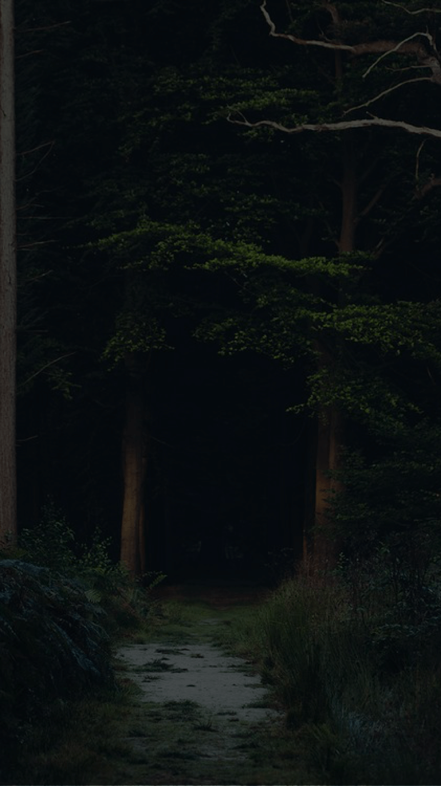

<!DOCTYPE html>
<html>

<head>
    <meta charset="utf-8">
    <meta name="viewport" content="initial-scale=1, maximum-scale=1, user-scalable=no, width=device-width">
    <title></title>
    <link href="lib/ionic/css/ionic.css" rel="stylesheet">
    <link href="css/style.css" rel="stylesheet">
    <!-- IF using Sass (run gulp sass first), then uncomment below and remove the CSS includes above
    <link href="css/ionic.app.css" rel="stylesheet">
    -->
    <!-- ionic/angularjs js -->
    <script src="lib/ionic/js/ionic.bundle.js"></script>
    <!-- cordova script (this will be a 404 during development) -->
    <script src="cordova.js"></script>
    <!-- images loaded js -->
    <script src="lib/imagesloaded.pkgd.min.js"></script>
    <!-- photo swipe js -->
    <link rel="stylesheet" href="lib/photo-swipe/photoswipe.css"> 
    <link rel="stylesheet" href="lib/photo-swipe/default-skin/default-skin.css"> 
    <script src="lib/photo-swipe/photoswipe.min.js"></script> 
    <script src="lib/photo-swipe/photoswipe-ui-default.min.js"></script> 

    <script src="js/app.js"></script>
</head>

<body ng-app="weddingApp">
    <ion-nav-view>
    </ion-nav-view>
    <script id="templates/home.html" type="text/ng-template">
        <ion-view>
            <div class="main-container" ng-show="imagesLoaded">
                
                <div class="button-bar bottom-nav-bar">
                    <div class="button" ui-sref="lection"></div>
                    <div class="button" ui-sref="timelocation"></div>
                    <div class="button" ui-sref="thanks"></div>
                    <div class="button" ui-sref="photos"></div>
                </div>
            </div>
            <div class="preload"> <!-- the size of pre-load sources is 1304 KB -->
                
                
                
                
                
                
                
                
            </div>
        </ion-view>
    </script>
    <script id="templates/lection.html" type="text/ng-template">
        <ion-view>
            <!-- </img> -->
            <!-- <a class="button button-clear go-back-btn-left icon ion-chevron-left" ng-click="$ionicGoBack()"></a> -->
            <ion-slide-box on-slide-changed="slideHasChanged($index)" show-pager="true" class="fullPage">
                <ion-slide>
                    <div style="background-image: url(img/Invetation-c.jpg);" class="div-image fullPage"></div>
                </ion-slide>
                <ion-slide>
                    <div style="background-image: url(img/Invetation-e.jpg);" class="div-image fullPage"></div>
                </ion-slide>
            </ion-slide-box>
        </ion-view>
    </script>
    <script id="templates/timelocation.html" type="text/ng-template">
        <ion-view>
            <!-- </img> -->
            <ion-slide-box class="fullPage slider-background-dark" on-slide-changed="slideHasChanged($index)" show-pager="true">
                <ion-slide>
                    <div class="fullPage fullBackground background-light">
                        
                    </div>
                </ion-slide>
                <ion-slide>
                    
                </ion-slide>
            </ion-slide-box>
        </ion-view>
    </script>
    <script id="templates/thanks.html" type="text/ng-template">
        <ion-view>
            <!-- </img> -->
            <!-- <a class="button button-clear go-back-btn-left icon ion-chevron-left" ng-click="$ionicGoBack()"></a> -->
            <ion-slide-box on-slide-changed="slideHasChanged($index)" show-pager="true" class="fullPage">
                <ion-slide>
                    <div class="thanks-container">
                        <div style="background-image: url(img/thanks1.png);" class="div-image div-image-thanks"></div>
                    </div>
                </ion-slide>
                <ion-slide>
                    <div class="thanks-container">
                        <div style="background-image: url(img/thanks2.png);" class="div-image div-image-thanks"></div>
                    </div>
                </ion-slide>
            </ion-slide-box>
        </ion-view>
    </script>
    <script id="templates/photos.html" type="text/ng-template">
        <ion-view class="fullBackground background-light">
            </img>
            <ion-scroll class="fullPage">
                <div class="photo-wall-container" itemscope itemtype="http://schema.org/ImageGallery" data-pswp-uid="1" ng-click="onGalleryClick($event)">
                    <figure ng-repeat="i in photos" itemprop="associatedMedia" itemscope itemtype="http://schema.org/ImageObject">
                        <a href="img/photos/{{i.index}}.jpg" data-size="{{i.dataSize}}">
                            
                        </a>
                        <!-- <figcaption itemprop="caption description">Image caption</figcaption> -->
                    </figure>
                </div>
            </ion-scroll>
        </ion-view>

        <!-- Root element of PhotoSwipe. Must have class pswp. -->
        <div class="pswp" tabindex="-1" role="dialog" aria-hidden="true">
        
            <!-- Background of PhotoSwipe. 
                 It's a separate element as animating opacity is faster than rgba(). -->
            <div class="pswp__bg"></div>
        
            <!-- Slides wrapper with overflow:hidden. -->
            <div class="pswp__scroll-wrap">
        
                <!-- Container that holds slides. 
                    PhotoSwipe keeps only 3 of them in the DOM to save memory.
                    Don't modify these 3 pswp__item elements, data is added later on. -->
                <div class="pswp__container">
                    <div class="pswp__item"></div>
                    <div class="pswp__item"></div>
                    <div class="pswp__item"></div>
                </div>
        
                <!-- Default (PhotoSwipeUI_Default) interface on top of sliding area. Can be changed. -->
                <div class="pswp__ui pswp__ui--hidden">
        
                    <div class="pswp__top-bar">
        
                        <!--  Controls are self-explanatory. Order can be changed. -->
        
                        <div class="pswp__counter"></div>
        
                        <button class="pswp__button pswp__button--close" title="Close (Esc)"></button>
        
                        <!-- Preloader demo http://codepen.io/dimsemenov/pen/yyBWoR -->
                        <!-- element will get class pswp__preloader--active when preloader is running -->
                        <div class="pswp__preloader">
                            <div class="pswp__preloader__icn">
                              <div class="pswp__preloader__cut">
                                <div class="pswp__preloader__donut"></div>
                              </div>
                            </div>
                        </div>
                    </div>
        
                    <div class="pswp__share-modal pswp__share-modal--hidden pswp__single-tap">
                        <div class="pswp__share-tooltip"></div> 
                    </div>
        
                    <button class="pswp__button pswp__button--arrow--left" title="Previous (arrow left)">
                    </button>
        
                    <button class="pswp__button pswp__button--arrow--right" title="Next (arrow right)">
                    </button>
        
                    <div class="pswp__caption">
                        <div class="pswp__caption__center"></div>
                    </div>
        
                </div>
        
            </div>
        
        </div>
    </script>
    <script id="templates/photo.html" type="text/ng-template">
        <ion-view class="fullBackground background-dark">
            </img>
            <ion-scroll zooming="true" min-zoom="1" direction="xy" scrollbar-x="false" scrollbar-y="false" class="fullPage photo-detail-wrapper ">
                <span class="vl-helper"></span>
                
            </ion-scroll>
        </ion-view>
    </script>
    <script id="templates/photo-swipe.html" type="text/ng-template">
    </script>
</body>

</html>
